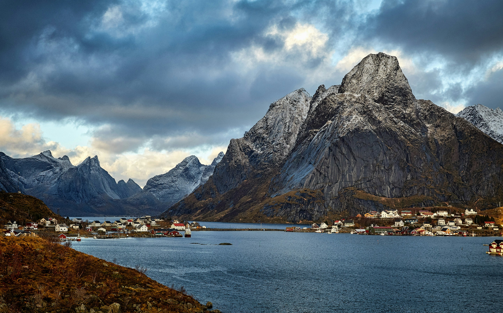
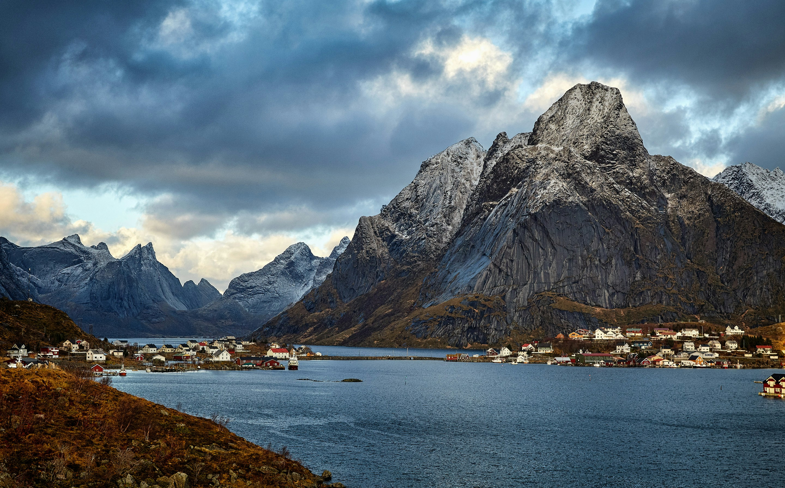

The Remote Islands of Svalbard, Norway Tucked away in the northernmost point of Norway, the Svalbard Archipelago is a remote destination that is often overlooked by travelers. Despite its remote location, this group of islands offers a unique combination of breathtaking landscapes, rare wildlife, and fascinating history that is worth exploring. Here, visitors can embark on a dog-sledding adventure across frozen tundras, observe wild polar bears in their natural habitat, or visit abandoned mining settlements that tell the story of Svalbard’s coal-mining past. With very few tourists, Svalbard has managed to maintain its natural beauty, making it a true hidden gem waiting to be discovered. Svalbard is a group of islands (archipelago) located between the Arctic Ocean, Barents Sea, Greenland Sea, and the Norwegian Sea. Since 1920 these islands are integrated part of Norway. These islands are located directly north of Norway in the Arctic Ocean. The group of islands range from 74° to 81° north latitude and from 10° to 35° east longitude. The islands can be divided into two groups: the Spitsbergen group of Barentsøya, Edgeøya, Nordaustlandet and Prins Karls Forland, and the more remote islands of Bjørnøya, Hopen, Kong Karls Land and Kvitøya. Svalbard is the northernmost place in the world with a permanent population. Located between the 76° and 81° parallels, they are far more northerly than any part of Alaska and all but a few of Canada's Arctic islands. In fact, they would be permanently locked in by ice if not for the moderating influence of the Gulf Stream, and it is this comparative warmth that makes them habitable. The islands cover a total of 62,050km2, the largest of which are Spitsbergen, Nordaustlandet and Edgeøya. The combined permanent population is less than 3000, nearly all of which is concentrated in the main settlements of Longyearbyen and Barentsburg on Spitsbergen